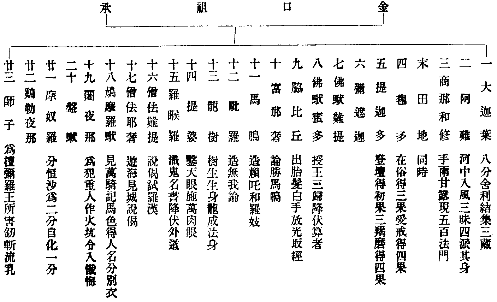
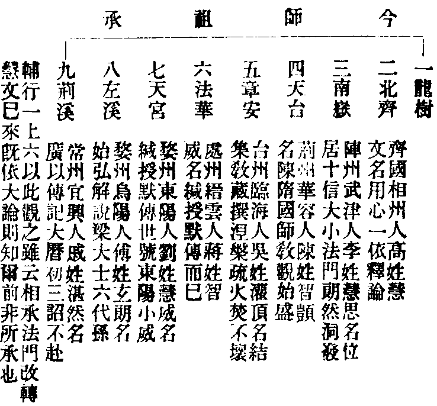
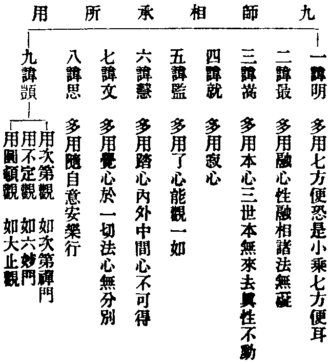

讀教記卷第十五
止觀懸敘
提綱
圓頓止觀吾祖說己心中所行法門寂巨散於太虗爍群昏而獨耀其救世明道之書乎眾生無始背覺合塵六趣相環唯昏與散佛世尊哀而極之闢六妙門隨其悟入則妙止妙觀介乎其間矣去佛逾遠空有並作暗禪者多增上慢文字者推功聖人於是圓頓止觀晦而不明莫逃算數之譏未盡即具之旨唯吾智者頓悟法華融萬境於一心蕩神靈於幽極不涉思惟不容擬議同聲自爾相應同氣自爾相求章安曰止觀明靜前代未聞者以此止觀妙法也無得而名焉對散曰止對昏曰觀方止方觀未甞昏未甞散也因相待以成法即絕待而照本譬猶阿伽陀藥不得已而用之病去藥亡醫亦不立又何止觀明靜云乎哉夫止觀者高上者高上卑劣者卑劣包羅凡聖盤礴古今情塵淨而日麗長空智眼明而月沉寒水吾佛以此傳之迦葉西天二十三傳而之師子尊者洎乎東傳震旦訖歸于我天台涌出自己光明普照大千世界非靈山再來孰能與於此然聖賢間出以心傳心傳者是誰心是何物噫止觀之道不可得而傳耶果不可傳何謂受莂於定光止觀可傳也如其可傳何謂我行無師保傳不傳余不得而知諸人試定當看。
定境
定境用觀一家要宗必先詳於解行之文解行詳則境觀明矣止觀一部其要在乎解之與行解則圓解諸法本真行則立行定境用觀第五文云前六重依修多羅以開妙解今依妙解以立妙行此解行之分也余嘗斷曰開妙解於定境之前用妙觀於定境之後故知定境用觀盡在立行文中與開解文了不相涉荊溪義例十不二門大槩同然皆先開解而後立行也立行有二先定境後用觀定境者何立陰是也若不立陰妙觀就何處用妙境就何處顯故四明十義書云定境修觀乃是止觀一部綱格進道要宗輔行於陰入境文分兩段謂先重明陰境即於三科內唯取識心去尺就寸文也次明修觀即十法成乘文也山外之失可知矣近代有謂定境之後方用妙解蓋不究此解行之文如其說則定境在先開解在後矣又有謂先以不思議觀觀不思議境為初重能所却合不思議境不思議觀而觀於陰為次重能所蓋亦不究定境修觀之文如其說則修觀在前定境在後矣顛倒錯謬蓋不足評今所評者揀境云爾揀境者陰妄心也揀定現前一念妄陰即就此陰觀具三千三千即一念一念即三千不縱不橫不前不後如水之八德時則陰境轉為不思議境矣不思議境境即是觀兩重能所歷歷分明若十境十乘色心開合法塵四類宗計異同具在本文茲得以略止觀曰然界內外一切陰入皆由心造佛告比丘一法攝一切法所謂心是論云一切世間中但有名與色若欲如實觀但當觀名色心是惑本其義如是若欲觀察如伐樹得根如灸病得穴今當去丈就尺去尺就寸置色等四陰但觀識陰識陰者心是也輔行科此今當去丈就尺等文為尅示境體釋此文竟乃料揀云問五識五意識及第六識並能生於受等三心何等識心及所生三心是今觀境答五識五意識定是今境未屬煩惱在無記故於第六中取能招報者仍須發得乃屬煩惱境餘之分別方屬今境然此料揀文說者不一有云界入無歸有云識名通漫有云二宗王數同異有云通將陰境對煩惱境揀今皆不用當知端坐觀陰自有三節一尅示境體即今揀境文是二歷餘一心三例餘陰入在下破徧文末輔行既云尅示境體四明十義書指此為總無明心可玩繹體之一字與總之一字余嘗曰是相須揀是體須觀記主以識體多含故精揀至於無可揀定境的切矣此棟境文乃與歷餘一心并煩惱境對辨至下歷餘一心文却對此揀境與煩惱境辨也今釋料揀文問五識五意識及第六識並能生於受等三心何等識心及所生三心是今觀境觀字平聲此約識相問也答云五識五意識定是今境既不復言所生三心則約識體答也未屬煩惱此是煩惱非煩惱境也在無記故報陰無記也此五識五意識對現行煩惱揀示今境尚未屬現行煩惱則不與發得隆重煩惱境辨矣又云於第六中取能招報者仍須發得乃屬煩惱境餘之分別方屬今境此對煩惱境揀示今境既取能招報須發得者為煩惱境則能招報現行煩惱屬歷餘一心矣然此一文自有二義故四明指要鈔云輔行又揀能招報心及以發得屬於下境下境之言以歷餘一心與煩惱境並屬於下也近代諸師皆以在無記故一節文為通將陰境對煩惱境揀以於第六中取能招報以下至餘之分別方屬今境為的示所觀今詰之問文是今觀境答文先以五識五意識揀示今境次於第六識揀示今境凡問答中三言今境的指心體何上下之違戾耶此揀境說也其次用觀。
不思議境
世尊三昧安詳起師悟藥王精進時靈鷲山中人未散不因南嶽有誰知好境界此境非思量分別之所能解吾祖智者不得已而強名之則曰一觀心是不思議境秖此一言陰心破矣秖此一言能所忘矣忘能所故從境受名對所破陰名為能觀對不思議觀名不思議境破惑證中名所顯理雖有三名唯一實相荊溪云指的妙境出自法華所謂諸法實相實相必諸法諸法必十如十如必十界十界必身土又依大經及以大論立三世間是為三千是為三諦修此觀者其相云何秖一念心具足十界百界千如依報假名亦復如是故云介爾有心三千具足如八相遷物物在相前亦不被遷相在物前亦不被遷秖物論相遷秖相遷論物如如意珠穰穰雨寶如三毒心心相徧布如彼夢事夢境宛然則是一心一切心一法一切法一一塵中一切剎一一剎中一切塵一一身土莫不然是故觀者無差別互即互具互泯互融如是觀時是名正觀是名觀具具即是假假即空中一空一切空無假無中而不空三千皆空也一假一切假無空無中而不假三千皆假也一中一切中無空無假而不中三千皆中也輔行云今欲修觀但觀理具俱破俱立俱是法界若夫三道三德十種三法乃至百千萬億三法豈逾於此徹因徹果該自該他攝正攝依徧事徧理是為不思議境然曰觀心者無別有心即是前定境所謂識陰者心是也之心無別心也此不思議境是伐樹之斧灸病之火捨檐之法破賊之將略則三觀廣則十乘只一十乘三根統被上根一觀直入體境含諸十乘備矣中根加行鯁痛自他或二或三極至于七歷位安忍離于法愛下根障重尤當進修陰境既然諸境例爾五略十廣皆不思議然此境相語不頓舒故有理性修德化他三境之別要而言之照一心理具之謂性觀理具無性之謂修解無性而說之謂化他自然之理也非相生也非相含也故日用中燒香禮拜彈指散華開講坐禪著衣喫飯皆不思議境之全分或謂性德境不通修或謂修德境推四性屬事或謂性德境對理造餘二對事造備在章門非此可既諸人會麼修具即性具秋曉天台路性具修亦忘錦衣行故鄉。
止觀(一)
祖承
止觀(一)(一)行人若聞付法藏則識宗元(云云)付法藏人始迦葉終師子二十三人末田地與商那同時取之則二十四人諸師皆金口所記並是聖人能多利益(云云)聞法之要功德若此佛為此益付法藏也。
輔行(一上)(五)若不先指如來大聖無由列於二十三祖若不列二十三祖無由指於第十三師若不指於第十三師無由信於衡崖台嶽(云云)如來依理隨機立名像末四依弘宣佛化受化稟教須討根源若迷於根源則增上濫乎真證若香流失緒則邪說混於大乘由是而知台衡慧文宗于龍樹二十三聖繼踵堅林實有由也良可信也。
輔行(一上)(十二)金口者此是如來黃金色身口業所記問曰此諸尊者為何位行答準四依位初依屬凡不得名聖傳中既不的判其位而云並是聖人故多是第四依人亦可通於第三第二(云云)聞法既有如是深益故佛付法令至後世展轉聞之致使龍樹之後妙觀斯在良由於此。
付法藏因緣經(飛字函第六卷後魏吉叉迦夜共曇曜譯)今略依經示圖止觀輔行所引同。

阿難所問經我入涅槃大迦葉當與分別與比丘比丘尼作大依止如我無異迦葉傳阿難阿難傳末田地田地傳商那和修修傳優波毱多。
阿含經我滅度後一百年間長者末田提出興于世涅槃疏(五)(十九)佛雖正人其佛出後故不作如來之像四果非正人謂四果是真福田化道易行宜作此像(云云)今取一塗即是四依為四果像(云云)舊明四依位不同(云云)今約地前未斷別惑是初依地上斷別惑作三依是別義約十信是初依三十心十地斷別惑作三依者是圓義就圓義更作通別通者四十心共作四依別者十信是初依初住至六住是第二依七住至九住是第三依十住是第四依。
指歸鈔(七)(二十六)以大斥小故云非正既在滅後(云云)若作佛形便濫佛出。
玅玄(十一)(五)五品六根為初依十住為二依十行十向為三依十地等覺為四依。
達摩多羅禪經(圖字函東晉佛陁跋陁羅譯)佛滅度後尊者大迦葉尊者阿難尊者末田地尊者舍那婆斯尊者優波崛尊者婆須蜜尊者僧伽羅叉尊者達摩多羅乃至尊者不若蜜多羅諸持法者以此慧燈次第傳授。
疑者云章安於止觀中明祖承者何曰玄句釋經附經立觀取信彰明若止觀說己心所悟傳授機緣預防暗證離其邪說故須明也輔行之文甚顯又疑今論祖承傳圓頓大法而毱多諸祖自證小果者何也曰準荊溪料揀意謂涅槃長壽品迦葉菩薩問佛以四依品答明列四果以為四依第四依人名阿羅漢住第十地經中四依既是佛後弘法之人正是二十四祖是故即用四依判位乃知金口諸師皆破無明大乘圓人云證四果蓋以四依為四果也疏云四依為四果像(五)(十九)孤山云列諸祖預承佛記位在四依內契大乘外現小像四果是真福田故二十四祖多言證果也又疑禪宗更加婆舍斯多不如蜜多般若多羅菩提達磨為二十八祖而道原傳燈錄智炬寶林傳嵩師正宗記共贊之又有定祖圖序云原夫菩提達磨實佛氏之二十八祖也與夫大迦葉乃釋迦如來直下相承者也吾佛以正法要為一大教之宗以密傳授為一大教之祖乃至其始亂吾祖宗熒惑天下學者莫若乎付法藏傳正其宗祖斷萬世之諍者莫若乎禪經禪經之出乃先乎付法藏傳六十二載始終備載二十八祖已見於晉世矣付法藏傳乃真君廢教之後但謂二十四祖方見魏之時耳又傳燈諸祖之前列七佛相承付法有偈及釋迦拈華迦葉微笑等其說與今相反云何曰明心徹悟彼此有人立祖判經未敢聞命圭峯有云禪是佛心教是佛口心口之法定相違耶但宗承無識之輩妄加四祖反有破斥付法藏傳以為謬妄(文)由是而知二十八祖西天記之說非圭峯製作明矣今以四義評道原諸說一立祖無據若付法藏傳立二十四祖乃西土聖賢所記凡經三譯是今的據禪宗二十八祖有何憑據若嵩師云禪經始終備載二十八祖今檢禪經只有九尊者耳何故妄指數多況名字多不全同前後有異如何影射二不究年代或云達磨是西土人到此親說安別求據而又不本傳燈寶林傳專據禪經影帶達摩多羅轉作菩提達磨謂是西土二十八祖出於禪經且禪經譯在姚秦之世當東晉隆安年中中間涉宋與齊至梁普通八年達磨方到後魏孝文帝太和十九年十月五日歸寂通涉一百餘載豈有魏末示滅先載晉譯經中若云達磨壽長未入滅者既未入滅不應立為祖師縱使壽長不應近二百年也三謗七佛偈經中多明七佛者欲使取信易明即非佛佛以法相付若諸佛付法各付機緣況此七佛乃空劫前三佛成劫後四佛時劫隔遠何甞相見付法耶如釋迦何甞親見彌勒設有授記之說自受於然燈且非受迦葉佛記又況七佛付法之偈出何經論耶四妄立拈華且釋迦拈華迦葉微笑付法偈頌且無所出既無所據妄生疣贅耳。
涅槃(一)(十七)諸佛世界諸大菩薩悉來集會及閻浮提一切大眾亦悉來集唯除尊者摩阿迦葉訶難二眾涅槃疏(一)(廿一)揀出二眾者有事有顯事者迦葉入滅定定力所持故不來阿難為魔所罥故不來有所顯者迦葉為顯不捨細戒故迦葉最長子方持佛法佛若臨滅應赦細戒(云云)又為外道所譏師所制戒滅後皆捨迦葉若來寧得執正此事阿難為顯最後佛稱歎付囑(云云)問佛令捨細戒迦葉不許師弟相拒何也答不然佛為利根隨有利益迦葉為鈍根還令如故故非違拒。
西域記(九疑字函)當來慈氏世尊之興世也三會說法之後餘有無量憍慢眾生將登此山至迦葉所慈氏彈指山峰自開彼諸眾生既見迦葉便捨憍慢時大迦葉授衣致辭禮敬已畢身升虗空示諸神變化火焚身遂入寂滅。
涅槃經(三)(一)若以法寶付囑阿難及諸比丘不得久住何以故一切聲聞及大迦葉悉當無常如彼老人受他寄物是故應以無上佛法付諸菩薩以諸菩薩善能問答如是法寶則得久住。
涅槃疏(三)(二十二)佛酬其請新故言所有正法悉付迦葉如來緣謝故去迦葉機興故付內同佛德外委大臣秉正法教乃指圓伊而作依止酬其所請此中為學新伊者故故言法付迦葉下文為不學新伊者故故言迦葉無常不堪付囑各各為緣。
指歸鈔(五)(十二)各各為緣者此讚後斥各為機緣迦葉大行始終無異所以斥為無常者此乃寄高訓下令捨偏入圓。
祖承付法正在法華開顯迦葉領解時也故迦葉敘云今法王大寶自然而至如佛子所應得者皆已得之具如藥草喻品述成之文涅槃第二卷云我今所有無上正法我悉已付摩訶大迦葉可看已之一字則知在法華明矣或謂付法在涅槃者迦葉既不曾在會何所付耶若爾付法傳云化緣將畢垂當滅度告大弟子摩訶迦葉如我今者將般涅槃以此深法用囑累汝汝當於後敬順我意廣宣流布無令斷絕迦葉白言善哉受教何也曰此乃滅後作傳者備敘法華中始末事耳。
止觀(一)(二)智者師事南嶽(云云)南嶽事慧文禪師(云云)文師用心一依釋論論是龍樹所說付法藏中第十三師智者觀心論云歸命龍樹師驗知龍樹是高祖師也輔行(一上)(十三)金口祖承從前向後今師祖承從後向前者為指文師以承龍樹文便故也(云云)言高祖者若以智者所指應以南嶽為父師慧文為祖師龍樹為曾祖師(云云)是則章安望於龍樹方為高祖耳(云云)今家亦以龍樹為始是故智者指為高祖。


北峯師曰吾佛出世普化群生隨機饒益宜大說大宜小說小循循善誘調停成熟咸得成佛不令一人獨得滅度謂何禪宗只度一種大機而小機不度果如此則佛說大小經論何為若佛為普度機緣所以說大小法則汝傳弘佛法但接大機豈盡佛意今天台示佛化意前則隨機普被後則咸會佛乘同安祕藏無復小乘二三差別如來化緣既息法付諸祖既經開顯咸悟大乘並修圓頓若無助道正行難成故須正助相扶自他兼被大小通傳無有剩法所以大師云始鹿苑中鷲頭後鶴林法付大迦葉記主云既成道已說必託處故略舉此始中終三以法驗證以處顯法即所傳之法正指於斯又義例云雖依法華咸歸一實末代根鈍若無扶助則正行傾覆正助相添方能遠運佛化尚以涅槃為壽況末代修行非助不前故扶律談常以顯實相(文)又復佛世機緣值聖猶尚住小各執一門況末代根性寧唯一種諸祖既知法華開顯世智偏行無非佛因故隨機弘闡宜大說大宜小說小隨其修證一一點示無非實相雖隨根所用不同既知實相悉是圓機不名偏小所以三種止觀或漸或頓或不定歸戒禪定無漏慈悲應是定散偏小不捨一法皆是大乘無非實相盡成佛果乃知教家收機備足故梁氏論云天台大師贊龍樹之遺編從南嶽之妙解用三種止觀成一事因緣括萬法於一心開十乘於八教戒定慧之說空假中之觀坦然明白可舉而行於是教無遺法法無棄人人無廢心心無擇行行有所證證有其宗大師教門所以為盛自智者傳法五世至今湛然大師中興其道為予言之如此故錄之以係于篇(文)自餘異論邪說得以略之。
鶴林
輔行(一上)(八)鶴林者在拘尸城阿夷羅跋提河邊樹有四雙復云雙樹四方各雙故名為雙又云根分上合故名為雙佛於中間而般涅槃涅槃之時其林變白猶如白鶴因名鶴林(云云)。
輔行(七上)(十一)方面皆悉一枯一榮榮喻於常等枯喻無常等如來於中北首而臥入般涅槃表非枯榮(云云)入涅槃已東西二雙合為一樹南北二雙亦合為一二合皆悉垂覆如來其樹慘然皆悉變白(云云)言北首者增一阿含云表於佛法久住北天長含第四云佛告阿難安我頭南首面向北則使佛法久住北天機見不同不須和會(云云)。
輔行(七上)(十七)爾時師子吼菩薩白佛言世尊何等比丘能莊嚴娑羅雙樹佛舉六人及以如來六人在因如來居果因果俱得莊嚴之名因果始終四德具足所表義顯故云莊嚴因六人者(云云)師子吼言如我解佛所說義者阿難比丘即其人也得淨天眼指阿那律少欲知足指大迦葉無諍空行指須菩提善修神通指目犍連得大智慧指舍利弗於一一人廣如阿難後舉果人云(云云)師子吼言如我解佛所說義者唯有如來乃能莊嚴娑羅雙樹(云云)前之六人雖曰多聞乃至大智要必宣說一切眾生悉有佛性已於法華得聞記已非不能說但不及果人故云如來最能莊嚴。
大經六人能說佛性證大涅槃為莊嚴故記主曰因果始終四德具足所表義顯故云莊嚴或曰法華授記八部四眾因身子同解即雙樹義顯問身子不忍見佛涅槃故先入滅何故涅槃疏(十四)(二十二)引大經云身子見佛涅槃不憂常住不喜須知附小與開顯義異。
傳觀
止觀(一)(三)此之止觀天台智者說己心中所行法門。
輔行(一上)(十二)言說己心中所行法者即章安密從大師得所行之法也故舉所行以顯所傳若傳而不習有言無行將何以辨所傳不空故知所傳即己所行亦令後代行弗違言所以一部並為行相(云云)故應信此即是所傳故遺囑云止觀不須傳授私記時為人說私記即指章安所記十卷是也囑意正言面授意多不周私記言旨全備。
止觀(一)(三)天台傳南嶽三種止觀一漸次二不定三圓頓皆是大乘俱緣實相同名止觀漸則初淺後深如彼梯隥不定前後更互如金剛寶置之日中圓頓初後不二如通者騰空為三根性說三法門引三譬喻輔行(一上)(十六)天台去別釋所傳之法即此所傳是向所行(云云)為三根等者此三止觀對根不同事雖差殊因緣頓理離圓教外無別根性當知此三並依圓理分此三行名三根性是故漸次不同於別或一日一月一生修之可獲(云云)故知此三知圓理同而行相少別當知南嶽唯授天台圓頓之理約行須以漸不定助問南嶽大師知四教否答南嶽委知而不細判(云云)又此四教非始南嶽慧文禪師既依大論大論釋經經明三教當知此教傳來久矣至天台來分別始盛(云云)是故三觀總攝四教又此三止觀名字雖似八教中三其相永別彼八教中指華嚴為頓鹿苑去為漸不定寄在前四味中。
玅玄(十)(十六)一圓頓觀從初發心即觀實相(云云)二漸次觀從初發心為圓極故修阿那波那十二門禪(云云)不定觀者從過去佛深種善根今修證十二門豁然開悟得無生忍(云云)。
釋籤(十)(二十)此三觀中頓觀一種全同止觀漸及不定少分不同漸初不云先修歸戒(云云)不定但寄漸次論發不定若彼止觀但論從師所受修行不定故彼文云或漸或頓或止或觀既云天台傳於南嶽不可從師得於所發是故不同此約昔聞今隨修觀所發不定(云云)故彼三種初皆知圓。
一家傳心之要非章安莫能敘出非荊溪莫能發明故舉所行以顯所傳或問天台傳南嶽三種止觀的在何時曰智者初見南嶽便示普賢道場為說四安樂行豈非於大蘇時授三種止觀修行之法若謂智者已證悟了方授則觀法無用矣然約理唯一約行有三以由南嶽悟法華頓理理雖一種行相宜以漸不定助故成三種止觀也疑者云漸次止觀解頓行漸與涅槃前三解圓行漸同異云何曰教則部別不同行乃因果俱異何者彼通三教因人行之今唯圓人所行因異也彼通證小果如須跋聞常證小今唯證大果異也部別不同可知矣若玅玄三名具如釋籤若化儀三名固不須辨孤山謂傳教不傳觀殊昧斯旨輔行云若不示人境觀不任依止。
無情佛性
止觀(一)(四)繫緣法界一念法界一色一香無非中道。
輔行(一上)(二十)一色一香無非中道者中道即法界法界即止觀止觀不二境智冥一(云云)自山家教門所明中道唯有二義一離斷常屬前二教二者佛性屬後二教於佛性中教分權實故有即離今從即義故云色香無非中道此色香等世人咸謂以為無情然亦共許色香中道無情佛性惑耳驚心今且以十義評之使於理不惑餘則例知(云云)。
涅槃經(率字函三十七卷)迦葉菩薩言世尊如佛所說眾生佛性猶如虗空云何名為猶如虗空耶善男子虗空之性非過去非未來非現在佛性亦爾(云云)無有三世猶如虗空善男子虗空無故非內非外佛性常故非內非外故說佛性猶如虗空善男子如世間中無罣礙處名為虗空如來得阿耨多羅三藐三菩提已於一佛法無有罣礙故言佛性猶如虗空(疏科云初明佛性同虛空)迦葉菩薩白佛言世尊如來佛性涅槃非三世攝而名為有虗空亦非三世攝何故不得名為有耶佛言善男子為非涅槃名為涅槃為非如來名為如來為非佛性名為佛性云何名為非涅槃耶所謂一切煩惱有為之法(云云)非如來者為一闡提至辟支佛(云云)非佛性者所謂一切墻壁瓦石無情之物(云云疏科云二明佛性異虗空)金錍(云云)。
凡諸釋義皆以立宗為正破古為旁輔行因釋圓頓止觀色香中道之文故正明觀道旁破清涼金錍亦然故四明云正為顯圓妄染即佛性旁遮偏指清淨真如然無情佛性出自涅槃如來被機有權有實佛性之旨有進有否實而言之三佛皆徧三因亦徧從權而說三佛皆局三因亦局若帶權說實之文則但說實教正徧對實說權則權教緣了不徧是知涅槃只一佛性之言在佛則為實教正因在迦葉則為權教緣了故章安科眾生佛性猶如虗空云佛性同虗空義科如來佛性涅槃是有云佛性異虗空義清涼諸師唯知如來法身體徧而不知眾生正因體徧故使惑果事而迷因理是為迷名而不知義也。
置毒
止觀(一)(五)又云置毒乳中乳即殺人乃至置毒醍醐醍醐殺人此證不定也。
輔行(一上)(二十七)云云。
玅玄(五)(十八)行人心行譬之如乳實相智譬之以毒毒有殞命之能此智有破無明之力久遠劫來說實相毒置於凡夫心乳毒慧開發不可為定或於初味發或於後味發不得次第往判故言置毒乳中乃至醍醐徧在五味中悉有殺義。
輔行(三下)(三十一)大經二十七獅子吼難云眾生之身六道差別云何而言佛性是一佛言譬如有人置毒乳中乃至醍醐皆悉有毒乳不名酪乃至醍醐名字雖變毒味不失若服醍醐亦能殺人實不置毒於醍醐中佛性亦爾雖徧五道受別異身而是佛性常一不變。
置毒唯置凡夫心乳若止觀通五時置者乃是以發驗置當知置毒之用全約如來懸鑑故釋籤(六)(十)若不探頥當時入位隨聞遠近多少生熟行之淺深故藉今生重聞方發(文)豈非約佛意預鑑四教機緣宜在將來何味中熟故為隨宜而強毒之若論能鑑能置通於五味若論所置唯在凡夫心乳名為置毒而今日重聞方發既在醍醐或在四味却以今驗昔必能置之時在醍醐也故云乃至置毒醍醐亦能殺人等或問發毒唯破無明何故通四教發耶曰能發雖通四教破惑唯局別圓。
起教觀
止觀(一)(九)云何裂大網種種經論開人眼目而執此疑彼是一非諸聞雪謂冷乃至聞鶴謂動今融通經論解結出籠。
輔行(一上)(三十五)云何裂大網至出籠者裂謂裂破既感果報設教利人破他疑網雖本為開眾生智眼實機未顯如法華前眾生於教權實空有事理互迷若為判已開權顯實使權實不濫令識教本意破執教疑網達一理無外了法門大體知眾教有歸(云云)今融通等者理本無說說必被機四悉四門諸觀諸諦適時利物未及通方便各計一隅情執未破今為融會重疑颯然如繫在籠情無所適解執滯結開權教籠如遊太虗縱曠無礙。
止觀(二)(二十三)第四為通裂大網諸經論故說是止觀者若人善用止觀觀心則內慧明了通達漸頓諸教如破微塵出大千經卷恒沙佛法一心中曉若欲外益眾生逗機設教者隨人堪任稱彼而說乃至成佛化物之時或為法王說漸頓法(云云)此義至第九重當廣說攝法中亦略示。
輔行(二下)(三十二)四明裂大網者裂破執於權教疑網初文通除自他疑網故云通裂乃至須曉漸頓諸教出自一心若不善用不思議觀觀於一心不思議境何由可裂執教大疑若欲下為利他裂他疑網今明果報且語初住以初得故越却中間故云乃至成佛即指妙覺初住已去通能八相裂大疑故故云裂網(云云)如此自他皆由妙觀契於妙境是故能有如是妙用。
指要(上)通應二事果後利他既是淨用依正必融縱是他機亦同自體此之妙事在今染心能如是觀妙用方顯。
止觀(三)(二十六)復次心攝諸教略有兩意一者一切眾生心中具足一切法門如來明審照其心法按彼心說無量教法從心而出二者如來往昔曾作漸頓觀心偏圓具足依此心觀為眾生說教化弟子令學如來破塵出卷仰寫空經故有一切經教悉為三止三觀所攝也。
輔行(三下)(二十三)復次下明用心攝諸教之意文具二意即是能化所化之別一約所化謂破眾生心塵出一切法二者佛既先得今教眾生即是化他能所相成義不可闕。
十不二門則止觀十乘(云云)。
指要鈔(上)言起教一章(云云)。
文心解(三)今謂不然若自裂網則通初心若裂他網須至果後故輔行釋化他不思議境云初心依理生解為他說者與起教不同此唯實報八相被物發起權實施開廢等何得云始行能裂他網乎仰又起教之言須起八教徧逗群機而反用自裂之文作自行起教不亦濫乎又令修起教之觀成說法之用不許但修十乘果用自顯者且輔行云若不善用不思議觀觀不思議境何由可裂執教大疑豈非但是修十乘耶況今文云理境乃至利益咸爾故知起教更無異塗若謂十乘不該果用後之五妙更須別修是則眾寶之車成壞驢之運。
指要(下)從此門去純談化他而化他法門雖即無量豈出三千亦攝歸剎那同為觀體(云云)故今文先明淨用同在染心理具情迷顯發由觀。
修起教觀自四明始以止觀五略十廣自行化他皆是初心行者修法玅玄觀心之義亦然故荊溪云止觀十乘成今自行因果起教一章成今化他能所指要釋曰彼文起教雖即弗宣而且不出裂網之意此裂網文泛論生起雖在果後化他細尋其意多明初心自行故文云種種經論開人眼目執此疑彼是一非諸今融通經論解結出籠豈非始行能裂他網又文云若人善用止觀觀心則內慧明了通達漸頓諸教豈非自行起教此四明妙得文外之意也輙出其意名字位人五品十信望於初住並屬初心故知南嶽智者四明融通經論解結出籠與夫通達漸頓諸教凡講說結緣皆是因中修起教觀之相也裂網之文生起與釋其義一致但生起文中有解結出籠之語故法智云豈非自行能裂他網釋文中有通達漸頓諸教之語故云豈非自行起教可看結字與教字則知始行能裂他網與自行起教義同變文云爾若望果後八相化他則始行能裂他網自行起教並屬初心自行輔行下文將化他境對起教料揀而有初心依理生解與實報八相被物其義不同可以例知但化他境乃發圓解為他四說此起教觀乃是通達漸頓諸教融通種種經論義不同耳故知因中若不能修自行起教之觀果後焉能成就化他說法之用淨覺昧此悲夫。
讀教記卷第十五